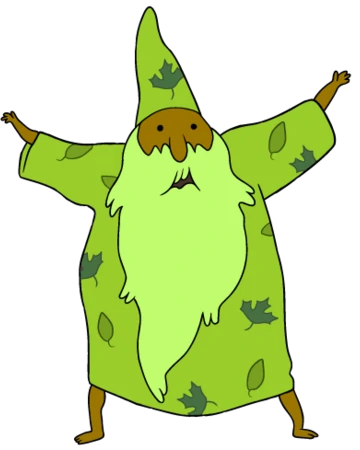

A competição começa e todos começam a duelar aleatóriamente.
Você vê alguns magos se escondendo na arena, à espera de que os
primeiros a duelar eliminem um pouco da
competição.
Você vai voando em direção a um dos covardes, porém no meio do caminho
é interceptado pelo Mago da
Floresta.
Seu primeiro oponente é este velho chegado a umas plantinhas diferenciadas, o que você
faz?

1 - Desvia dele e continuar em direção a um mago aleatório escondido, porque afinal, se ele está
escondido,
deve ser um fracote.
2 - Saca seu nunchako e dá-lhe uma boa cacetada na cabeça
3 - Invoca uma chuva de granizo para amassar esse cara de folha